In the modern tech ecosystem, developers require a dedicated platform to write, read, and share industry insights. DevConnect is a high-performance blogging application designed specifically for developer communities. Built using the MERN (MongoDB, Express, React, Node.js) stack, it provides a feature-rich, scalable, and responsive ecosystem. DevConnect incorporates industry-standard security features like JSON Web Tokens (JWT), double-salted password hashing, input sanitization, and query validation.
Users can easily register accounts, log in persistently, compose articles using a premium Rich Text editor (Quill), and manage their drafts and published posts. Social features such as nested comments, likes, and bookmarks encourage active discussions. Image assets (avatars and blog cover images) are directly managed via Cloudinary integration for optimal CDN-based delivery. An advanced role-based administration panel provides deep analytics, user management, and blog moderation controls to enforce community guidelines.
| Layer | Technology | Purpose & Implementation Details |
|---|---|---|
| Frontend | React.js (v18) | Declarative component-based UI rendering, state management via Context API. |
| CSS / Styling | Tailwind CSS | Utility-first styles, responsive media queries, and transition utilities. |
| Bundler / Build | Vite (v8) | Fast HMR developer tooling and optimized production builds. |
| Backend API | Express.js & Node.js | RESTful routing, controller orchestration, and middleware pipelines. |
| Database | MongoDB Atlas | NoSQL document database storing users, posts, comments, likes, and bookmarks. |
| Media Storage | Cloudinary API | On-demand image upload, optimization, and responsive CDN asset delivery. |
| Security | Helmet, Express-Rate-Limit | Headers protection, rate-limiting, and XSS sanitization. |
DevConnect employs a decoupled Client-Server architecture. The frontend application is a Single Page Application (SPA) which makes HTTP requests to a RESTful API backend. Authentication is stateless, managed using JWT stored in the browser's localStorage, which is attached to the headers of authorized requests.
+-------------------------------------------------------------+
| Client (React SPA) |
| - Pages: Home, Explore, Profile, Dashboard, Admin |
| - Contexts: AuthContext, ThemeContext |
+-------------------------------------------------------------+
|
HTTP API Requests (Axios)
|
v
+-------------------------------------------------------------+
| Backend (Express API) |
| - Middlewares: Protect Auth, Admin check, Rate-Limiter |
| - Controllers: Auth, Post, User, Comment, Admin, Bookmark |
+-------------------------------------------------------------+
/ | \
/ | \
v v v
+----------------+ +--------------------+ +-------------------+
| MongoDB Atlas | | Cloudinary CDN | | Google OAuth API |
| - User/Post | | - Avatars | | - Credential |
| - Likes/Comm | | - Cover images | | Verification |
+----------------+ +--------------------+ +-------------------+
The project is neatly divided into client/ and server/ folders to cleanly isolate client-side assets
from backend business logic.
devconnect/
├── client/ # React Frontend Application
│ ├── src/
│ │ ├── components/ # Reusable widgets (Navbar, Footer, BlogCard)
│ │ ├── context/ # AuthContext and ThemeContext
│ │ ├── layouts/ # Page shell (MainLayout, ProtectedRoutes)
│ │ ├── pages/ # Routed pages (Home, Profile, Admin)
│ │ ├── styles/ # Global CSS variables and fonts
│ │ └── utils/ # Client helpers and formatters
├── server/ # Node.js / Express Backend
│ ├── config/ # Database and Cloudinary connection configs
│ ├── controllers/ # Request handlers (posts, auth, admin)
│ ├── middleware/ # Authorization, role checking, error handling
│ ├── models/ # Mongoose schemas (User, Post, Comment, Like)
│ ├── routes/ # API route declarations
│ ├── services/ # Data seeding and upload handlers
│ └── utils/ # Input sanitizers, slug generators
├── screenshots/ # Application screen captures
└── output-images/ # Action success representations
DevConnect uses MongoDB Mongoose modeling with references to manage relationships.
All backend endpoints reside under the /api prefix and return payload-structured JSON responses.
| Method | Endpoint | Access | Description |
|---|---|---|---|
POST |
`/api/auth/register` | Public | Registers a new developer account. Checks for email duplicates. |
POST |
`/api/auth/login` | Public | Authenticates credentials and returns a JWT session token. |
POST |
`/api/auth/google` | Public | Verifies Google OAuth tokens and registers/logs in the user. |
GET |
`/api/posts` | Public | Retrieves posts list with support for search, category, and sorting. |
POST |
`/api/posts` | User | Creates a new blog post. Processes cover image uploads. |
POST |
`/api/comments` | User | Adds comments/nested replies under specific post IDs. |
GET |
`/api/admin/analytics` | Admin | Aggregates platform statistics for total users, blogs, and views. |
DevConnect secures all sensitive endpoints using stateless token-based authorization:
bcrypt.compare().JWT_SECRET.localStorage.Authorization: Bearer <token>.protect middleware intercepts the request, verifies the token signature, decodes the user payload, and injects the user object into req.user.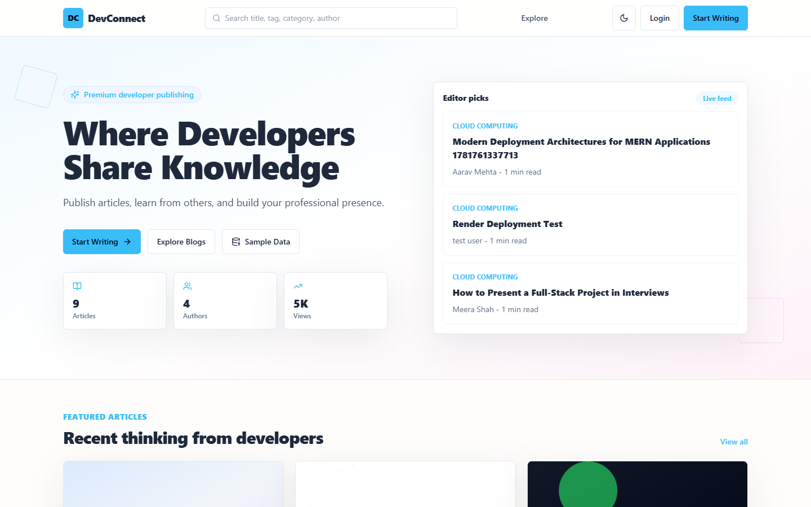
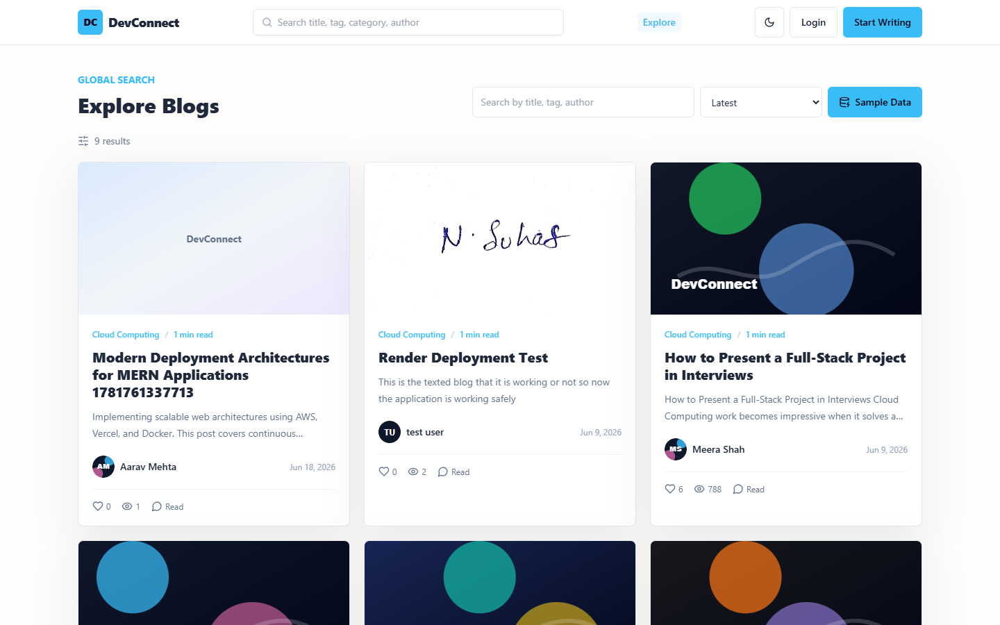
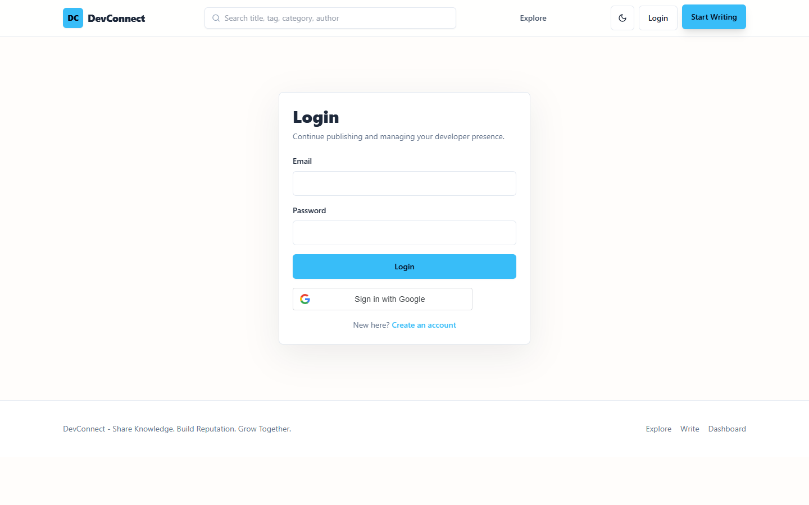
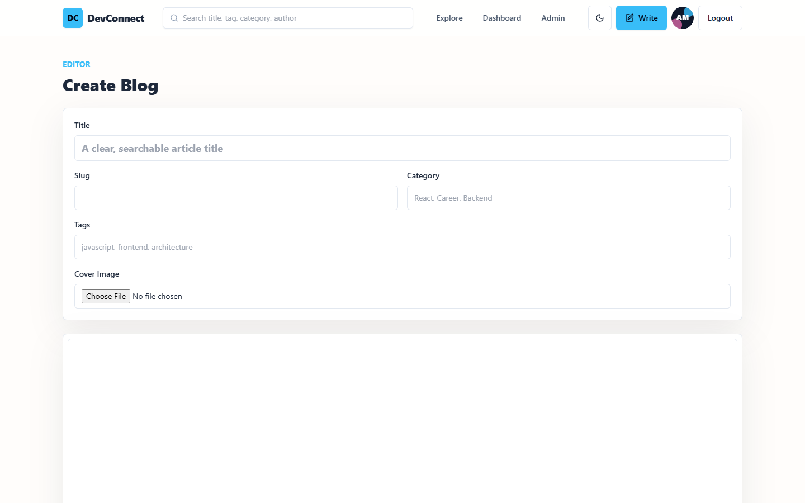
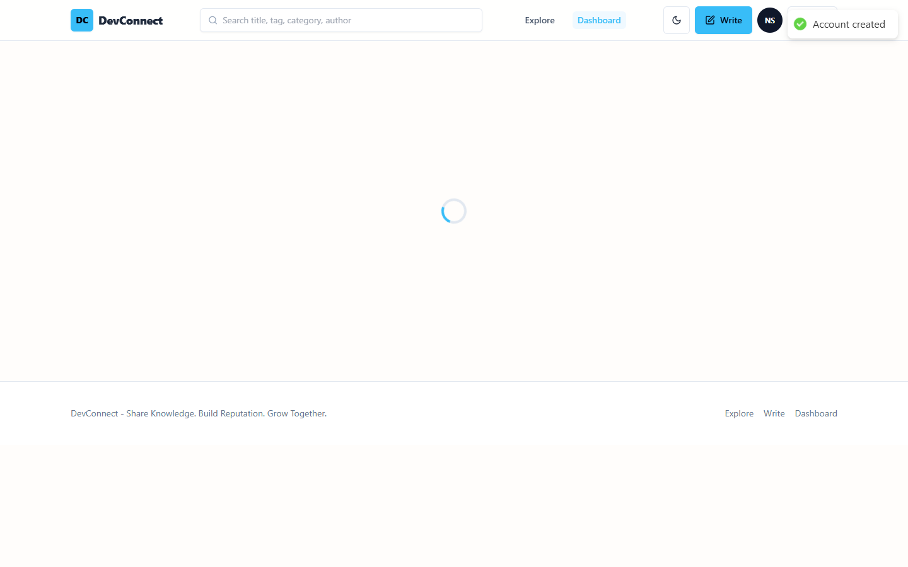
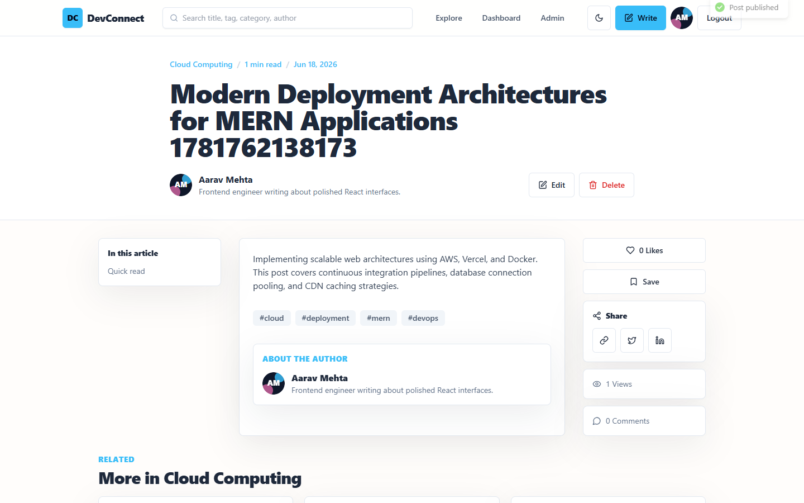
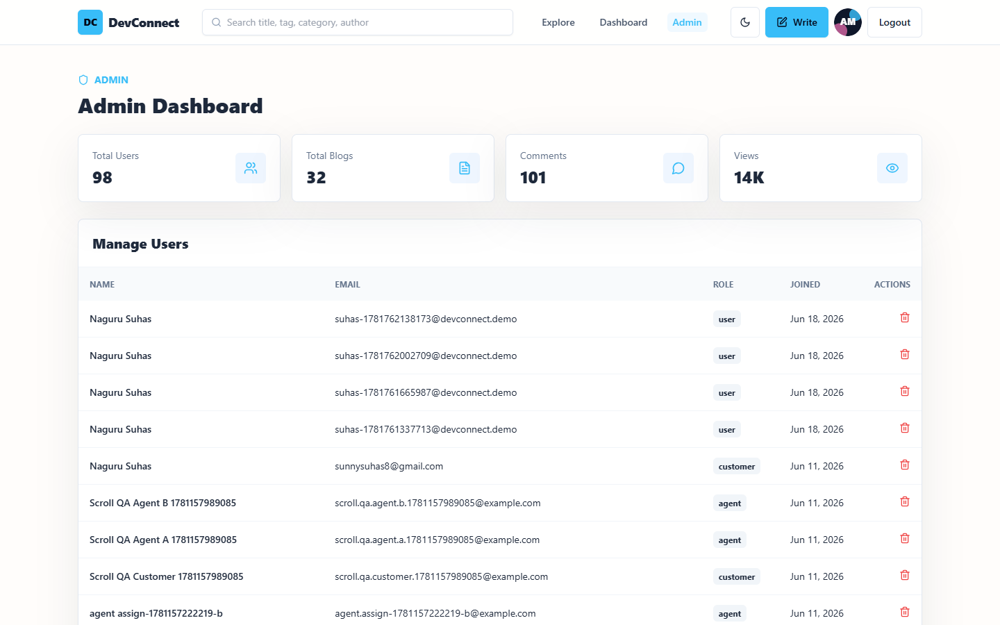
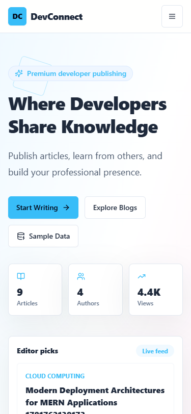
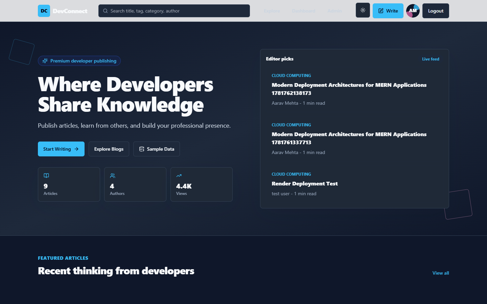
The application features instant feedback mechanisms using Toast notifications to confirm server interactions.
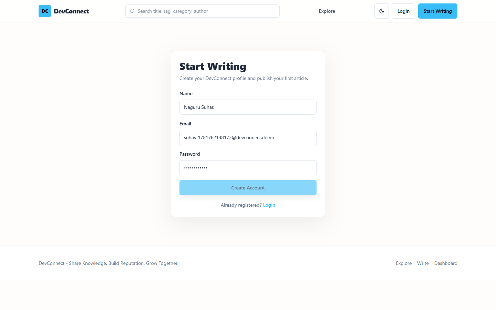
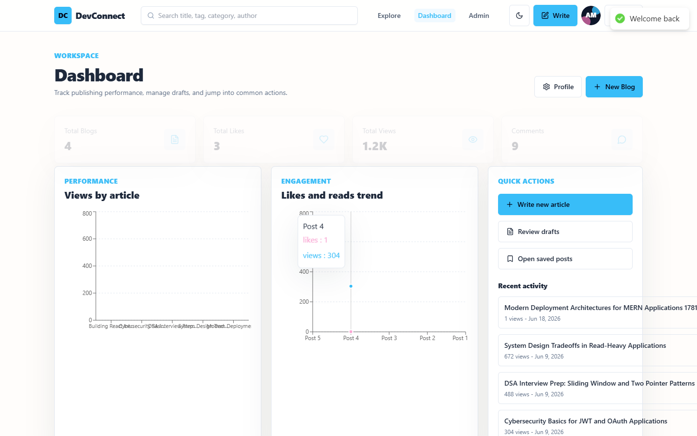
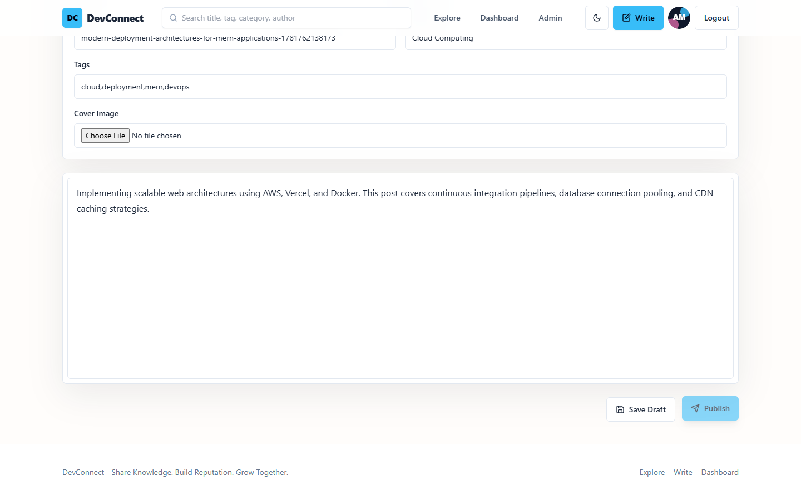
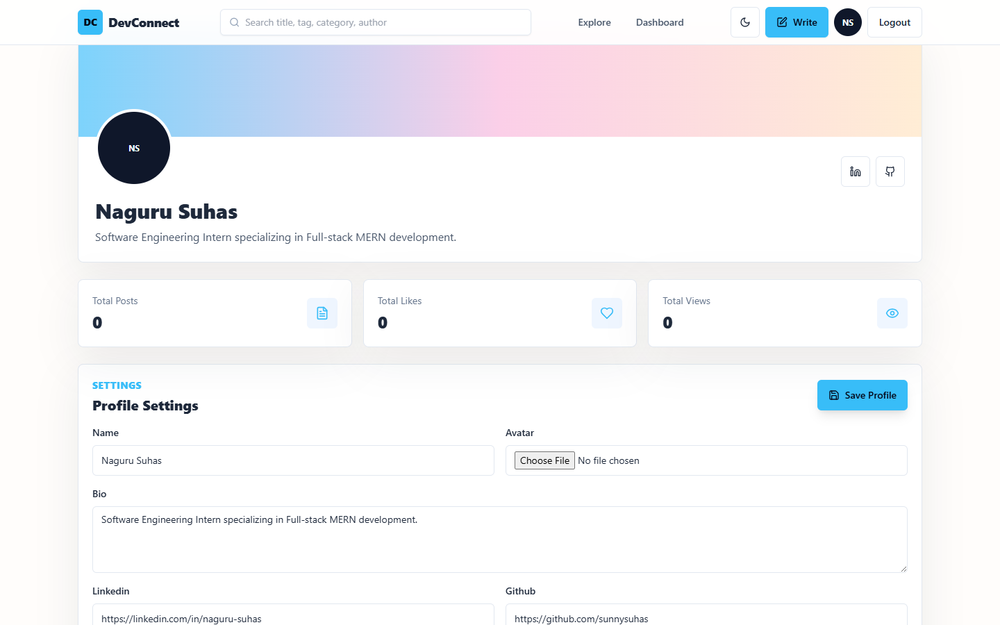
DevConnect is deployed globally to provide low-latency access and secure data storage:
Both frontend and backend are configured using decoupled environment variables. On deployment platforms, these are injected securely via dashboard setting panels, ensuring no credentials or secrets are committed to the public Git repository.
# Backend Config (Render Dashboard) NODE_ENV=production MONGO_URI=mongodb+srv://: @cluster0.mongodb.net/prod JWT_SECRET=secure-production-random-hash JWT_EXPIRES_IN=7d CLIENT_URL=https://dev-connect-blush.vercel.app CLOUDINARY_CLOUD_NAME=dbnf8tmdx CLOUDINARY_API_KEY=**************** CLOUDINARY_API_SECRET=**************** # Frontend Config (Vercel Dashboard) VITE_API_URL=https://devconnect-backend.onrender.com/api VITE_GOOGLE_CLIENT_ID=871812217407-****************
/api/auth/me) when mounting root components.populate() for efficient field joins.The DevConnect project represents a complete, secure, and production-grade implementation of a MERN Stack blogging application. Over the 8-week development course, Naguru Suhas successfully engineered secure custom JWT flows, structured an optimized database schema, integrated cloud media management, and delivered an admin moderation console. The project follows best practices in software development, including RESTful API structures, clean folder separation, and deployment pipelines. The repository is fully prepared and optimized for final internship review and grading.